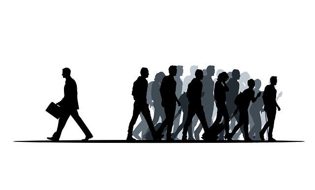

---Profile---

Kunii Ryohei
---AGE 29---
House Director & Investor & Self-Employed
---product---
ボタンクリック
Jsを導入した作品。イベントの発火を理解するために作成。
モーダルダイアログ
JQueryを導入した作品。モーダルダイアログの仕組みを理解するために作成。Hello Worldまでが手こずった。
モーダルウィンドウ、ログイン
モーダルダイアログの改訂版、オーバーレイをクリックしてもウィンドウが閉じるようにした。
hoverイベントの発火
hoverイベントの発火 find,this,addClass,removeClass,各メソッドの理解のため制作。
アコーディオンメニュー
Web制作に必須知識アコーディオンメニューの制作。 クリック時にイベントが発火しopenクラスを持っていればslideUpする。 持っていなければopenクラスが付与されslideDownする。
Toggleテスト
前回、Jqueryのスライド機能はif文で制作した。今回toggleメソッドをwebで発見しよりコードを短縮できると思って制作したが、思った以上に制作時間が掛かった。
{kind=link}
スライド画像ver1.00
webでよく見るスライド画像をJqueryで実装。 変数indexNumberを定義し、その値をeqメソッドの中にセットし、取得した要素にactiveクラスを付与することで制作できた。
スライド画像ver2.00
if文でインデックス番号==0(一番前)の時はprev-btnをhide()して。 インデックス番号==($(".slide").length-1)、(一番うしろ)の時はnext-btnをhide()した。 またこの一連の動きを関数として定義してver1.00の各function()にて呼び出した。
Hello Vue.js
Vue.jsをCDNを利用し接続した。javascript上の要素がHTMLに干渉するのでこれだけでドキドキした。現在勉強中であり今後vue.js中心にシフトしていく予定。
セレクトフォーム
submitイベント。valメソッド(inputの値をゲットorセット)の多用。 if文で("")空文字の時エラーメッセージの表示。 return false;してある。PHPも早く習得したい。
---Skill---
WEBプログラマーになるのにあたって、最初に学習に取り組んだマークアップ言語。2年半ほど使用していて自分の中では一番扱いに長けている。 主にprogate、専門書、Youtubeなどで学習した。
JavaScriptは(ES6)を2年ほど使用。主にprogateで学習し、その後はライブラリを重点的に学習した。
主にページの見た目を制作するときに使っている。使用している期間は1年ほど。主にweb記事と専門書にて学習した。自分が使えるフレームワークの中では少しできる方。
自分が一番使っているライブラリ。使用して1年ほどだが一番自信のあるスキル。今後はフレームワークで対応しきれないところをjQueryで制作していく。
現在学習中の言語。まだまだできることは少ないが、これからはvue.js中心にシフトしていく予定。学習は主に専門書とYoutubeを利用している。
最も自由に扱える言語。特に文章力を大学時代4年間かけて勉強し、また前職では広報担当だったため自信があります。
---History---
---School Days---
- 2008.3 大田原市立親園中学校 卒業
- 2008.4 栃木県立大田原高等学校 入学
- 2011.8 自己都合により本校を退学
- 2011.10 高等学校卒業程度認定試験合格により大学受験資格を得る
- 2012.4 京都造形芸術大学通信教育部芸術学科文芸コース 入学
- 2016.3 京都造形芸術大学通信教育部芸術学科文芸コース 卒業
---Business Person---
- 2016.12 就労継続支援A型事業所 株式会社ミライズ那須塩原 入職
- 2017.11 就労継続支援A型事業所 株式会社ミライズ那須塩原 退職
- 2017.12 障害者就労移行支援事業所 LITALICOワークス那須塩原 入所
- 2018.3 有限会社小林農産 入社
- 2021.3 有限会社小林農産 退職
- 2016.10 Microsoft Office Specialist word 2010 合格
- 2018.3 Microsoft Office Specialist Excel 2010 合格
---Special---
---障害特性---
unique skill
-統合失調症-

自分は、人が大勢密になっていてガヤガヤと人の声のする環境下で、疲労が大幅にたまり
ストレスが一定値を超えると主に陽性症状がでて、その後陰性症状が出現し回復すると
いうサイクルです。ですが現在は症状が出る前に、原因となっているストレスを把握し
自己対処を行っているので症状が出ることはほぼありません。
☆陽性症状-一般的に幻聴、被害妄想。 僕の場合ですと洗濯機の回っている音などが聞こえます。（空耳）
幻聴が聞こえた時は（自覚あり）、対処法として休憩や喫煙、服薬など自分一人で十分対応できます。
☆陰性症状-僕の場合眠気が強くなり、夜いつもより一時間早く寝ることで対処できています。
これらの症状は慣れない環境等のストレス値の蓄積によって引き起こされる場合があるので、時短勤務など、環境に段階的になれていくことによって大幅にストレス値は軽減されます。
---Win-Win-Winのために---
本人の努力すべき点
毎日の体調チェックを日記に書くこと。4年間毎日日記に朝起きたときの体調を記入し続け、体調管理能力を高め続けています。
またそれをアウトプット、共有することによって次にいつ頃体調が崩れやすそうか予測、対処が事前にできます。
支援者
私が直接会社に言いにくいことや、会社が私に直接言いにくいことを、第三者がワンクッション入れることによって両者の関係がスムーズかつ語弊がなくなります。
会社
たくさんの声がする場所だと集中力、注意力が散漫になるため、なるべく静かな環境か、必要があればヘッドホン等の着用をご相談させてください。
---Favorite---
Indoor

- アニメ鑑賞
- ゲーム
- 読書
- ネットサーフィン
- YouTube
- 映画鑑賞
- 株
- 仮想通貨
- ランニング
- 登山
- キャンプ
- 筋トレ
- ゴルフ
- サウナ
- 旅行
- ドライブ
- 外食